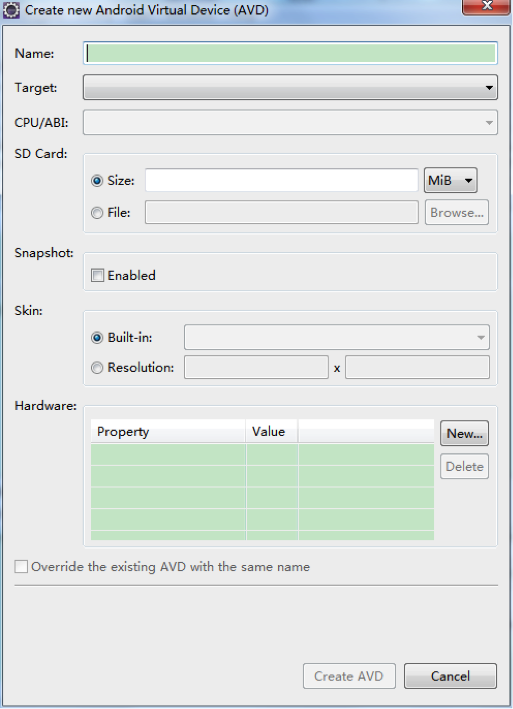
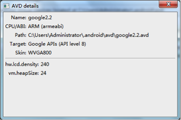

- Introduction
- 1. iOS 开发
-
2.
Android 开发
- 2.1. 架构设计
- 2.2. Android平台配置
- 2.3. Android开发入门
- 2.4. Android高级开发
-
2.5.
Android高级功能使用
- 2.5.1. Android离线1版本使用指南
- 2.5.2. Android离线2版本使用指南
- 2.5.3. Android离线3.0版本使用指南
- 2.5.4. Android离线4.0版本使用指南
- 2.5.5. Android离线4.0版本 - Websocket下载 - 使用指南
- 2.5.6. Android EMP5.2离线模块移植到5.1的解决方案
- 2.5.7. Android统计分析使用指南
- 2.5.8. Android附件阅读使用指南
- 2.5.9. Android二维码使用指南
- 2.5.10. Android图表使用指南
- 2.5.11. Android国际化使用说明
- 2.5.12. Android异常本地查看说明
- 2.5.13. Android高德地图使用说明
- 2.6. migrate
- 2.7. Release Note
- 3. WP 开发
- 4. QT 开发
- Published using GitBook
配置 Android 开发环境
1 配置开发环境
1.1 下载SDK、JDK、Eclipse
1.1.1 Java 环境配置-JDK下载
Android环境配置需要JDK1.6以上
下载地址：官网
http://www.oracle.com/technetwork/java/javase/downloads/jdk7-downloads-1880260.html
建议默认路径安装，无需配置java环境变量
1.1.2 Android 环境配置-SDK下载
地址：（推荐官网下载，但官网现在访问暂时有问题）
http://www.skycn.com/soft/52396.html
http://download.pchome.net/development/sample/detail-142455.html
http://www.android123.com.cn/sdkxiazai/
由于SDK的文件非常大（5G以上），下载耗费时间太长，建议从公司FTP上拷贝或者从现在Android开发人员手中拷贝，以提高工作效率。
1.1.3 Eclipse下载
Eclipse解压即可使用，无需安装。
下载地址： http://www.eclipse.org/downloads/
1.1.4 ADT下载安装
下载地址：
http://developer.android.com/sdk/installing/installing-adt.html
Step1. 启动Eclipse，然后从标题栏选择Help -> Install New Software Step2.
Step3. 点击ok后，会有安装的复选框，建议全选。在安装过程中会有联网的过程，此过程是检测所需插件，若需要下载会自动下载，会有耗时，请等待。
Step4. 安装完成后重启Eclipse。在标题栏中看到这两个小图标则表示安装成功。
1.2 创建模拟器
进入SDK的存放目录
双击运行AVD Manager.exe文件会出现以下对话框：
1.2.1 新建模拟器
点击按钮出现新建AVD对话框 
输入name输入框中输入唯一的名字，不可与其他AVD重名
选择合适的Target，若APK需要谷歌地图支持，需要选择相应版本下Google APIs的SDK。
如需要支持SDCard，需要输入SDCard存储量大小，建议256M即可。 并且在HardWare中New上外部存储设备的支持权限
选择需要的模拟器分辨率
点击
 按钮，即创建成功。
按钮，即创建成功。
1.2.2 修改已有模拟器
点击Edit按钮即可重新编辑模拟器配置。
1.2.3 查看模拟器配置
点击Details按钮即可查看该模拟器配置

2 如何使用配置的环境
2.1 启动模拟器
选中你想运行的模拟器，点击Start按钮。
弹出一下对话框后，点击Launch按钮
启动过程中，会自动弹出某些Dos命令界面或Windows对话框，请不要马上关闭，以免引起不必要的报错。请等待模拟器启动完毕后，再关闭不需要的对话框。 左图为启动过程中，右图为启动完毕的界面。
2.2 安装APK
把需要安装的APK拷贝到SDK根目录下的platform-tools文件夹下。
点击资源管理器地址栏
输入cmd
回车后，会自动进入到Dos命令界面，并且命令输入的路径已经进入到platform-tools文件夹下
输入安装命令" adb install + APK文件名" 例如：adb install emp_android.apk，点击回车。
安装成功。
2.3 卸载APK
使用模拟器程序管理卸载APK
-> -> ->  ->
->
1 Android模拟器运行速度慢的解决方案
android模拟器会比ios和wp的模拟器慢，是因为android模拟的是arm架构，而ios和wp模拟的是x86架构，而我们的电脑是x86架构，这导致应用只能在arm虚拟机中解析执行，所以慢。 解决这个问题，就是需要安装一个基于x86架构的android模拟器。经实践，下面２种方式可使用，速度很快。
1.1 解决方案一
bluestacks可单独运行，也可以在eclipse中启动进行开发调试。
下载地址：
http://pan.baidu.com/share/link?shareid=470589117&uk=2888990692
官网： http://www.bluestacks.net.cn/ （不推荐，功能受限）
安装完成后（安装低配置版），默认是android pad模拟器，若要调试手机应用程序，需要修改分辨率，修改方法：
运行regedit
HKEY_LOCAL_MACHINE\SOFTWARE\BlueStacks\Guests\Android\FrameBuffer\0
把0文件夹里的widht和height修改成你想要的分辨率，如480*800或者320*480。
找到在电脑右下角的BlueStacks图标，右键点击，选择"旋转直立式画面－关闭"
找到在电脑右下角的BlueStacks图标，右键点击，选择"重新开始"就可以了。
运行交通银行的效果
1.2 解决方案二
Intel推出了支持x86的Android模拟器，允许Android模拟器能够以原始速度（真机运行速度）运行在使用Intel x86处理器的电脑中 （对电脑有要求），已在eclipse中集成，可开发调试。
安装参考：
其它：若大家有兴趣可以自己在虚拟机(vmware)中安装一个android系统
Android模拟器加速运行讨论帖：
http://bbs.rytong.com/bbs/forum.php?mod=viewthread&tid=472&extra=page%3D1